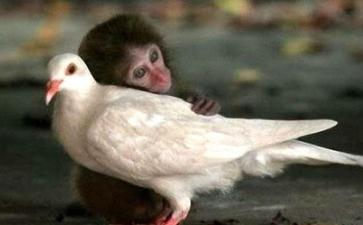

1.动物有生命吗？
是的，动物有生命。不过一旦它被煮得香香的，人们就忘记它曾经有生命。
2.天刚破晓，你想到什么？
路人甲：「多美好的一天即将开始。」
每当天刚破晓，美丽地球上就有超过一亿的家畜脑袋和身体分开。
谈到这一亿，由于不是指「钱」，所以总吸引不了大家的注意。由于破晓的那一亿真的不是指「钱」，所以人们对于它们的
注：若包括水产类，每天的数量将达数百亿。
3.小妹把专煮清蒸螃蟹的蒸笼端上炉子，同时把火点着，不一会儿的光景，竹笼里就发出激烈的沙沙沙撞击声。
第一次尝这道菜的客人：「为什么会有那种声音？」
已经肝胆迸裂、七孔流血的螃蟹：「因为我只想继续活下去。」
4.生猛海产店里。小女孩问妈妈：「为什么玻璃缸里的鱼都一直吐泡泡呢？」
鱼：「因为在这生命的最后一刻，我只想对你们--尤其是大人吐口水。」
5.服务生向客人推荐：「我们这边的名菜有水晶龙虾、黄金烤鸭、贵妃醉鸡、麒麟鲈鱼、锦绣扒翅……」
鸡羊猪牛鹅鸭虾：「你们可以继续想出更多绚丽的名称，好让我们觉得自己死得备极哀荣。」
6.在开车不小心碾过动物的那一刻，不管轮胎下的它是猫、是狗、是老鼠，甚至是一只蜥蝪，身为驾驶的心里都会相当相当懊恼不安，彷佛刚才不小心失手错杀了一个人。
不过很奇怪，当我们餐餐把动物放进嘴里嚼得它面目全非时，脸上却洋溢着幸福的表情。
7.猪肉摊前。「老板，一斤多少钱？」「一两五元。」客人：「夭寿！怎么又涨价？」
已经驾鹤西归的猪：「原来只有人类的生命是无价，而我们的生命是用来秤斤论两。」
8.「待在房间一个早上了，好想出去透透气。」你说。
「整个下午都窝在办公室里，简直快要疯了。」他说。
浩翰宇宙银河星系猎户漩臂上之太阳系第三行星地球亚洲台湾南部某县村庄农舍的窄窄铁笼里塞着五只鸡，它们光身体一动就造成互相踩来踩去。
「连我们都不知道为何自己一出生就成为囚犯？」其中一只望着笼外的蓝天说。
9
三只动物在池边聚会。
猪：「虽然我的生命只有一百八十天，算一算身上却有十几个针孔。」
鸡：「虽然我针是打得比较少，不过人类却干脆把各种药物掺入饲料，那些荷尔蒙、镇定剂、抗生素吃得我每天都想吐。」
大闸蟹：「虽然你们的遭遇我都很同情，但人类对我更狠，他们把、氯霉素、土霉素、诺氟沙星、多西霉素、己烯雌酚……全倒入池中，简直把我们泡在药水里要我们长大。」
鸡小弟回家后写下日记：「打针！打针！打针！吞药！吞药！吞药！人类只有在想或隆乳时才甘愿对自己这样。」
10
有一天，做了一个奇怪的梦。鸡鸭猪牛鱼虾蟹……排成一列依序前进，像是要远行。
我问它们：「怎么了，为什么今天大家不一起游戏？这样排队，是要去那里呢？」
它们似乎已哀大莫过于心死，只是淡淡地答：「去让人换换口味。」
11
再也分泌不出乳汁的牛：「你铁锤敲在我的后脑，我依然撑着发软的四脚不想被击倒，你视而不见我浑身的颤抖和喘嘘，无情的铁锤又一次瞄准，由于我本能地害怕闪躲，凹陷的脸庞只剩我一只惊恐的眼睛……」
不管牛排馆内装潢得多温馨雅致，播放的音乐多抒情悠扬，帘幕后的这般场景并不会改变，那是食用者为它们写下的剧本。
挣扎恐惧淌血凄厉的叫声翻滚试着站立起来又跌倒抽搐及喘气哀哀悲鸣苍白的脸
它们在屠宰场里夜夜的哀嚎，全世界的人都应该听一听。
注：母牛生产完开始产乳后，不久就又被迫怀孕，为下次的产乳做准备，这样乳期就都不会中断。
16
事情是这样子的，远超乎你以前的想象——猪在养殖场里的一生。
一、小猪的出生背景：父亲是种猪，母亲则是一辈子不停地被强迫交配、怀孕、生产的母猪。
二、在怀孕待产期间（约四个月），人类将母猪关在只能向前或向后一步的铁栏里，目的是为了让母猪减少热量消耗以节省饲料。由于母猪平均每年要生产二点五次，所以它的一生多半在这个铁栏里度过。
三、当母猪一胎生不到六只猪仔时，因已不符生产成本，将遭屠宰。
四、当母猪生超过十胎次，虽然它已鞠躬尽瘁连乳房都垂到地上，但也不得退休贻养天年，人类通常处理它的方式就是把它做成肉松。
五、母猪生出小猪后，人们便把母猪关在更动弹不得的「铁女郎」里，目的是避免母猪在喂乳时压到小猪。但是如果是在自然的环境中，母猪就不会压到小猪。
六、母猪与小猪只有约二十天的甜蜜相处时光（因为要喂乳），接着就要面临骨肉分离的巨痛。原因是人类认为它们要各司其职，母猪继续去准备生产，小猪则到饲养专区负责专心长大。
七、小猪出生后受到的
八、剪耳（把耳朵剪成奇形怪状以辨别身份）。
九、断尾（害怕它们日后互咬尾巴导致感染，但在自然环境中，猪并不会互咬尾巴）。
十、除了留做种猪以外，其余的公猪则通通阉割。
十一、活六个月就被结束生命，原本猪的自然
十二、一辈子有打不完的针，有的是为了预防疾病，有的则是施打生长激素、荷尔蒙……等，逼它们快速增肥。
十三、一辈子所吃的饲料含有各种药物的怪味或苦味。
十四、原本它们应该在山林里嬉戏奔跑，如今却终身囚禁在狭小的水泥隔间内，不但失去各种活动的自由，同时也无时无刻遭受拥挤、压力、沮丧、单调乏味……的挫折，最后甚至崩溃发狂。如果你我能走进猪舍就会发现，许多猪都因精神痛苦而一再重复出现怪异的行为，例如不断地来回走动、把头甩来甩去、嘴咬栏杆直到嘴巴流血仍然继续咬……等。
十五、一辈子活在粪尿四溢的脏污环境，少有人知道实际上猪是十分爱干净的动物。
十六、一辈子没有求偶与组成
十七、由于各方面的生长环境实在太差，经常致使猪的生理或心理承受不了而暴毙（不然为何常可听见市面上有人贩卖病死猪？）。
十八、动不动就要面临人类的棒打、脚踢、电击棒电击……等残酷虐待。
十九、结束它性命的方式：因为台湾民众爱吃温体肉，所以用电宰方式屠猪反而占少数。大部份都是由屠夫拿刀走进猪圈里，让猪目睹身边的同伴一个个被刺穿喉咙放血而死，然后轮到自己。
17
事情是这样子的，远超乎你以前的想象——蛋鸡在养殖场里的一生。
一、从蛋里孵出来后，由于小公鸡对业者毫无价值，所以一出生就全被丢进麻袋，让它们互迭窒息而死。有些工厂还会把小公鸡碾成鸡粉掺入喂母鸡的饲料，演变成鸡吃鸡。
二、小母鸡在成长过程须去喙两次，因此我们平常看到的鸡嘴总是扭曲变形。去喙是把血管和神经烧死，当然造成强烈的疼痛，而工人一旦没控制好造成去喙过度，就变成「废鸡」被判死刑。
三、利用打针、投药、增加照明时间等任何手段，让它们快速长大好准备下蛋。对人类而言，时间就是金钱。
四、随时淘汰弱小、跛脚、生病的小鸡，就像希特勒的集中营对待俘虏一样。
五、小母鸡养到约四个月大之后，就移至蛋鸡舍开始产蛋。这时母鸡改被关在狭小的格子笼里，平均每只鸡一辈子的
纸大，连张开翅膀也办不到，更不用说满足每只母鸡所渴望的沙浴和筑巢。
六、母鸡不管吃饭、睡觉、发呆……双脚只能踩在格子笼的铁丝上，因为没有坚实的地面支撑体重，每只鸡的脚都因而变得又粗又大，甚至有的鸡脚肤肉早就「镶入」铁丝。另外，格子笼的底层设计是倾斜的，为的是让母鸡下蛋后蛋会自动向前滚以便收集，由此可知，母鸡活在地球连想要站得舒适的权利也没有。
七、在一个工厂化的鸡舍，一个工人要看管几万只鸡，如果母鸡的脚爪或翅膀卡进格子内，那多半就只能活活饿死或渴死。
八、在产蛋期间，若母鸡寡产或生病无法下蛋，就只有杀无赦，因为这些母鸡每天会浪费业者新台币四角五分的饲料成本，所以当然不可原谅。因这项理由而前后被屠宰的蛋鸡，高达总数的百分之二十。
九、蛋鸡低头吃饲料时，由于脖子会与铁丝发生磨擦，往往脖子前都是光秃秃一片。而身上其它地方的羽毛，也长时间与铁丝网磨擦持续掉落，到后来每只鸡都变成秃毛鸡，再加上互啄所造成的伤口，一般人看到的反应通常是既怜又恶。
十、让母鸡活着最没尊严的，莫过于要母鸡在众目睽睽的情况下生蛋，原因是蛋鸡的心理世界竟然和人类相同——-就像没有女人愿意在大马路旁公然生孩子一样。由于在格子笼里无法筑巢，所以每次母鸡都是尽力把蛋忍在肚子里，当你看见母鸡一再钻到同伴的鸡腹下想找个隐蔽处下蛋（别的鸡当然不是赶它就是啄它），不知您对这个世界的看法会是如何呢？
十一、由于居住环境过度恶臭、拥挤、喧嚣，鸡笼内的鸡不时互相打架或受惊吓……母鸡所受的身心煎熬何其严重，但这不会是经济学里想讨论的范畴。
十二、母鸡生蛋八个月后，产蛋量会逐渐低落，这时业者为了制造另一波的产蛋高峰，就对母鸡实施强迫换毛。要强迫换毛必须让鸡的生理遭
受最大的压力和紧迫，因此全世界的养鸡业者都是采取不给它光、不给它水、不给它饲料三管齐下，让母鸡原本就只剩不多的羽毛掉光再重新生长。期间若痛苦到死掉的，只能怪自己命薄；若存活下来的，则产蛋量会提高维系约半年，但这也是母鸡生命中最后的一段烟火。业者用尽了千方百计，与一百年前的蛋鸡相比，它们现在每年的生蛋数是过去的足足五倍。
十三、强迫换毛的半年后，母鸡失去产能再也无利用价值，一样只有接受被屠宰，做成、鸡汤或宠物饲料。由于业者之间是以屠体处理完后的净重来算钱，所以母鸡在被宰杀的前两天，没有人会好心给它们吞进任何食物，这样人类又可从每只母鸡身上压榨九角的新台币。蛋和牛乳都一样，是不是素的其实早已无需花费精力讨论，我们只要问自己：这样得来的东西吃下去是否能心安？
18
被捕捉的鱼蟹，想回归河海。被豢养的禽兽，想回归山林。
当我们超越了口欲，和被囚禁的动物一样，人想要回归自我的念头也将与日俱增。
路人乙：「不知那个没天良的猛破坏雨林，难道以后要人类改吸二氧化碳维生？」
雨林严重受破坏的最主要原因：砍伐雨林→为了辟田→为了种牧草等饲料作物↓为了出口供欧美澳等国喂养牲畜↓即使生活在地球的另一端，而每个人也都吃过美国牛肉、澳洲牛肉吧……从今以后可别再随便骂：「不知是那个没天良的猛破坏雨林。」不然这样会连自己都感到不好意思喔！
19
人类看待动物与自己之间的关系就是食物链，以前生物课本总是这样教我们。生物课本的
不过老实说，食物链只是原始时代野蛮人的见解，因为身为生物界其中一环的我们，也不会希望那天进化比我们高的外星人拿大家当食物。此外，由于猪牛鱼鸭吃了含有农药的饲料，这些有毒的化学物因为无法排出体外，所以日积月累存留在牲畜的肌肉里，最后人类再透过食物链全部吃进自己的肚子，因此「高层人士」想也想不到他们吃进的农药量，竟然要比
动物是要靠吃东西才能长大的。单单在美国，有超过七成的谷物（例如
如果，全体的美国人愿意每星期一天不吃肉，所释出的谷物将可让地球上不再有人饿死。如果，已开发国家的民众愿意每星期一天不吃肉，所释出的谷物将可让地球上不再有人营养不良。听起来，真是再简单不过了……但是，凡事只为自己想的人类就是不愿意。他们还是只愿意咬着汉堡等吃出问题后，再上法院告告麦当劳。
注：这些谷物足以养活十三亿人口。
20
「因为
然而实情是——-当然是肉食者比较多。证据如后：
一、以宏观的角度来看，鱼虾蟹等水生动物一次能产上千颗卵，若母体不被吃掉，这上千颗卵孵化后又能繁衍上千只的下一代，由此等比级数类推，可知这个数字十分庞大。而菜虫每次只能生下约数十颗卵，纵使用相同的方式计算，其数量怎样也追不上。
二、假设作物喷洒农药造成菜虫死亡要怪素食者，那肉食者所造成的虫类死亡数量仍旧第一名。原因是大家都忘了牲畜必须吃饲料，而那些做成饲料的谷物也一样使用农药来杀虫（注）。鸡鸭猪牛一生所吃的饲料何其多（造成菜虫死亡），而人豢养牲畜是为了得到它身上的肉，所以这些菜虫的死亡责任总不能推给无辜的牲畜吧。既然这些责任要归肉食者，而肉食者所吃下的农药又是素食者的十三倍，由于农药是用来杀虫的，这足以证明肉食者造成菜虫死亡的数量远远较素食者多。三、最后，没有任何一位素食者愿意农夫使用农药除虫，甚至应该说，最好农夫永远都不要使用（因为没人想吃下农药，而作物不喷洒农药还是可以生长），所以说「吃素的人也是在」并不完全公平囧。反而我们来谈肉食者，肉食者并无法跟屠夫说「我要吃肉，但不准你。」由此可知，荤食者所吃的动物是完全直接为他而死，屠夫也只不过是拿钱「代劳」罢了。这两种情况怎么说也无
注：饲料作物所使用的农药剂量实际上更大，因为作物不是给人吃的，农夫会把菜虫杀得更干净以提高生产量。
21
「只有头壳坏掉的人才会去吃素！」这句话十多年来，我不知已经听了多少遍。
哲学家、最有才情的达文西，吃素。被
22
人生的目的是什么？好像没几个人答得出来。
猪活着的目的是什么？「来给人类享用的。」这个答案却代代相传输入我们的脑袋。
23
每当过春节、圣诞节、情人节、中秋节……你会想到什么？
每当过节的时候，火鸡、土鸡、牛羊猪鸭……会想到什么？
「呜……死期到了！」
24
「天无绝人之路。」在我们最低潮、最不顺遂的时候，总是这样鼓励自己。
可是按照这样的吃法：几十亿张嘴，早餐吃，中餐吃，晚餐吃，宵夜吃，点心吃，聚会吃，心情不佳也要吃……曾几何时，我们有想过放它们一条生路呢？
25
现在美食节目盛行，看得电视机前的观众口水直流。
还好家禽家畜没机会观赏这些节目，否则它们准个个泪水直流。
26
受欺侮时，你想到的可能是「血债血还」。
被宰杀尚未断气的那一刻，它想到的也是----「血债血还」。
27
人，可能为了救活一只鸟而感到喜悦至极，三日内碰到朋友就不忘提起这件事。
但是从小到大，这个人也有可能已经吞下数以万计的生命，却不知痛痒。
28
有人把孕妇的肚子直接剖开抢走婴儿，全世界六十多亿人口都仅有一种想法：只有丧心病狂的人才做得出来。
不过，不知是为什么，把活鱼的肚子剖开取出鱼卵做成鱼子酱，这种事在地球上却广受欢迎，甚至被视为顶级飨宴的代表。
29
工人把柔弱的貂高高举起往地上摔，等不及它断气，就把它全身的毛皮连皮带肉剥扯下来。围观的群众里有人看了不忍心大骂，工人只懊恼为什么全身血肉模糊的貂还睁着眼睛死不去？
原来把这样得来的皮草穿在身上，就叫美丽。
30
一出有关「审判」的舞台剧正在演出。
屠夫：「都是你的错！如果你不吃，我就不会杀，因为又不是闲着没事做。」
饕客：「才怪！都是你的错。如果你不杀，就算我有钱也吃不到，难道我会把整只鸡给活活生吞？」
屠夫：「不能说是你的错，也不能说是我的错，那……那就都是卖肉的人的错，没有商人，我俩什么事也不会发生。」
饕客：「对对对！这次您说得可真对！还有餐厅老板、厨师、服务生都有错……」
由于内容太过精彩，还没演完坐在台下的动物们就掌声如雷叹道：「Yes!这就是人性。」
31
我不怎么喜欢进餐厅，不只是因为自己是个素食主义者，还有另一个更重要的因素。
看到这么多人，嘴里含着别人身上的肉，却仍可谈笑风生，神情满足愉悦，这是怎样的一个精神层次？
32
别说要你亲手拿刀宰鸡，在割它们的喉咙之前，你可能连鸡脖子上的鸡毛都不敢拔。其实不是你真的没那个胆量，而是你清楚地感到心里有着一股
不敢杀它却敢吃它，那是「罪恶感」被巧妙的回避。但是罪恶感并不会在我们的生命里消失不见，它只是一直被努力收藏得很好。
33
大地是我们的母亲。
那我们怎么吞得下自己的兄弟呢？
34
有个人切菜时，不小心在手指上划出一道伤口，痛到她脸色发青连续惨叫，急着去拿一迭迭卫生纸止血和涂药。
日后，这样的一个人，却还有办法拿刀剖开活鱼的腹部，有办法割断鸡鸭的喉咙，我不得不怀疑她是否神智有问题。
不需要很深入地去想，我们就能了解动物们所遭受的处境。
由于不需要很深入地去想，我们就能了解动物们遭受的处境，所以，人们经常采取的一致作为就是不思不想。
35
行人道上。一对
「他们对动物好照顾喔！」路人丙说。
货车运着臭秽不堪的铁笼正驶往电宰场，一群被关在里头的鸡：
「自己养的宠物不会想吃它，是因为对它投入
36
教室里。
老师：「小朋友，让我们在平时就尊重生命与爱护动物，做一个人见人爱的好宝宝，你们说好不好？」
学生们振臂齐呼：「好。」
一只迷路误闯校园的母鸡：「这些话越听越像是选举语言了，因为等到他们放学回家用餐时，每个人又会看上我。」
37
餐厅里传来赞不绝口的声音：「生命就应该浪费在美好的事物上。」
睡前，鹅妈妈告诉它的小孩：「生命最浪费就是死在人类的碗盘上。」